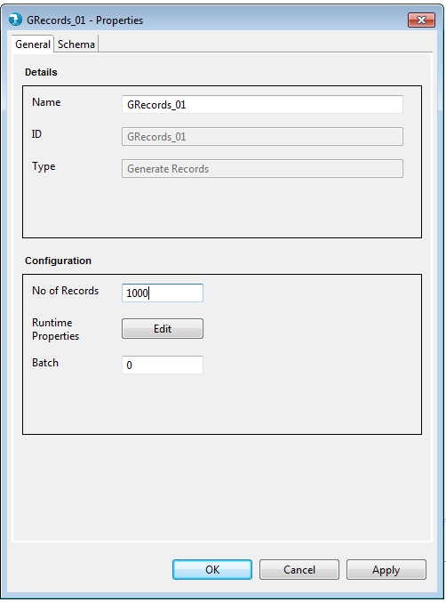
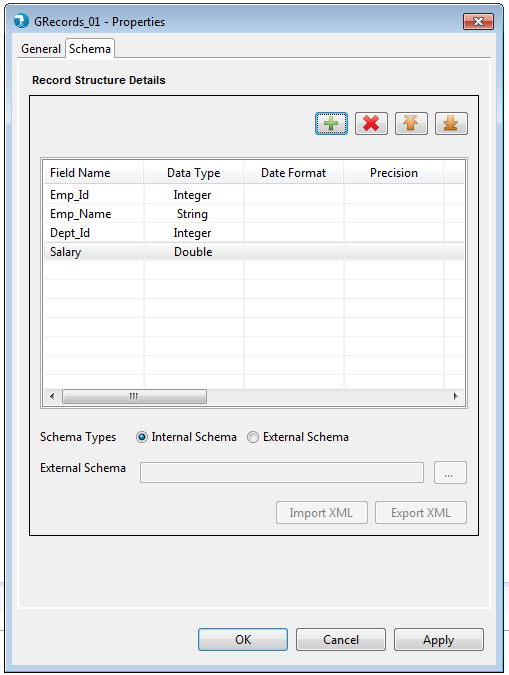

Hydrograph Help
Hydrograph Help
Generate Records Properties
Hydrograph Release Version 1.0
Properties for the Generate Records component can be viewed by Double click->component on canvas. The properties contains the 'General' tab and the Schema tab. It falls under the Input category in the component palette
General Properties:

Display
- Name - The Name field will specify the name of the component as desired by the user
- Base Type - Base Type signifies the basic operation area of the component. In this case it is of Base Type Input.
- Type - Type further categorizes the component to detailed operation that it intends to perform. Here it is of type Generate Records.
Configuration
- Runtime Properties - Runtime properties are used to override the Hadoop configurations specific to Generate Records component at run time. User is required to enter the Property Name and Value in the runtime properties grid.
- No of Records - No of Records field accepts an integer value. The number specified in the No of Records field is the number of records that will get generated by the component with dummy values.
- Phase - Phase simply accepts a numeric number starting from 0 and signifies the phase this component will execute in. By default this is 0.
Schema tab:

Schema Types
- Internal - User is provided a Grid to enter the internal schema of the Output Delimited file.
- Field Name - User needs to enter all the Field names in this column
- Data type - By default "string" Data type has been selected for any field added to the Grid. User can select from different Data type values like "integer", "double", "float" etc.
- Date Format - User can specify desired date format like "YY-DD-MM", "YYYYMMDD" etc for a date field in this column.
- Scale - Scale for a double, float or bigdecimal field can be specified here.
- Length - Length denotes the maximum number of characters that a particular Output field may contain.
External - User can provide an external Hydrograph Schema file of XML format. A text box is provided to either manually type or use the Browse button to select the schema file from File system. The External schema file path is resolved during run time and replaced with the contents of the file in the Job XML.